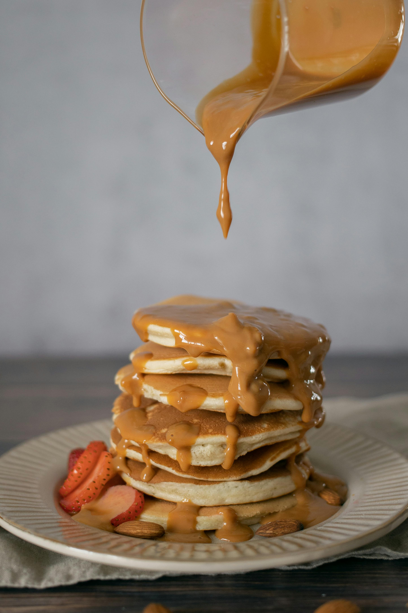

Grandma's Caramel Syrup | Odin Recipes

Description
A sweet but simple syrup to pour over pancakes and waffles. This was a recipe
my great-grandmother would make for us when we would visit her.
Ingredients
- 1 cup sugar
- 1 cup brown sugar
- 1 cup heavy cream
Steps
- Combine all ingredients into a medium-sized saucepan.
- Turn on stove to medium.
- Stir continuously. Do not let it come to a boil.
- When ingredients have become well incorporated and the granules have
dissolved, remove from the stove.
- Serve over pancakes, waffles, or french toast.
Home